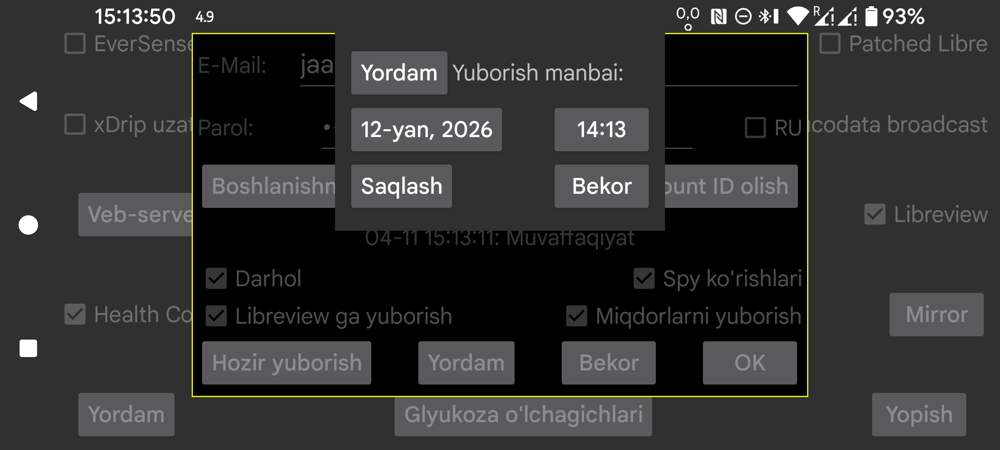

ar de es hi it ja ko nl pl ru sv tr uk uz zh en
Ma'lumotlar Libreview’ga qaysi sana va vaqtdan boshlab yuborilishini o'zgartiring. Ma'lumotning bir qismi Libreview da allaqachon mavjud bo'lsa, bu foydali bo'lishi mumkin. Masalan, ma'lumotni boshqa telefonga o'tkazish uchun mirror ulanishidan foydalanganingizdan so'ng va keyin o'sha yangi telefondan ma'lumotni Libreview’ga yuborganingizda.